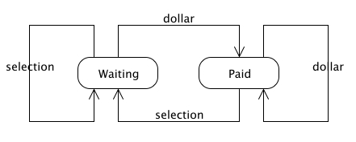

States, Transitions, and Events
This is a simple statemachine showing use of states and transitions.

The Vending Machine Statemachine Diagram
Above is a UML diagram of the statemachine the runs a simple vending machine. We can see that there are two rectangles with rounded corners. These are States. The vending machine has two possible states, Waiting and Paid. At any given time during execution, the vending machine will be in one of these states.
Note the arrows going from one state to another. These arrows represent the transitions of the statemachine. Also note that each transition is labeled with an Event. They invoke transitions. For example, when the vending machine is in the Waiting state and the dollar event is received, the statemachine will transition into the Paid state. When in the paid state and the selection event is received, the statemachine will transition back into the Waiting state.
This should seem reasonable. Imagine a real vending machine. When you walk up to it it’s waiting for you to put money in. You pay by sticking a dollar in and then you make your selection. After this happy transaction, the vending machine waits for the next client.
This scenario is not the only possibility though. Statemachine are very helpful in examining all possible flows through the system. Take the Waiting state. We don’t normally expect users to make selections if they haven’t paid but it’s a possibility. As you can see this unexpected event is handled by our vending machine. It will simply continue to wait for your dollar. And it would be foolish for someone to put more money in the the vending machine if they’ve already paid. Foolish or not, you and I know it happens. Our vending machine handles this graciously by taking the money and allowing the user to make a selection for the fist dollar they supplied. Effectively the client loses the extra money they put in. (grin)
Implementing the Statemachine:
We have identified 3 fundamental components to a statemachine: States, Transitions, and Events. It turns out that the simplest way to define a statemachine is to define its transitions. Each transition can be defined by identifying the state where it begins, the event by which is invoked, and the state where it ends. Using this scheme we can define out vending machine like so…
| Origin State | Event | Destination State |
|---|---|---|
| Waiting | dollar | Paid |
| Paid | selection | Waiting |
| Waiting | selection | Waiting |
| Paid | dollar | Paid |
Defining it in ruby is not much harder:
require 'rubygems' require 'statemachine' vending_machine = Statemachine.build do trans :waiting, :dollar, :paid trans :paid, :selection, :waiting trans :waiting, :selection, :waiting trans :paid, :dollar, :paid end
The above snippet assumes you have the statemachine gem installed. (See Overview for installation instructions).
The outcome of this code an instance of Statemachine stored in the variable named vending_machine. To use our statemachine we need to send events to it. This is done by calling methods that correspond to events.
puts vending_machine.state vending_machine.dollar puts vending_machine.state vending_machine.selection puts vending_machine.state
That sequence of events will produce the following ouput:
waiting paid waiting
That’s it for the basics. Example 2 shows how to make our statemachine more functional by adding actions.
| Written by Micah Martin |  |